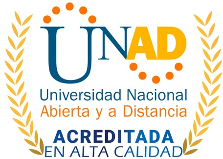
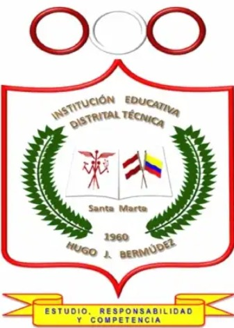
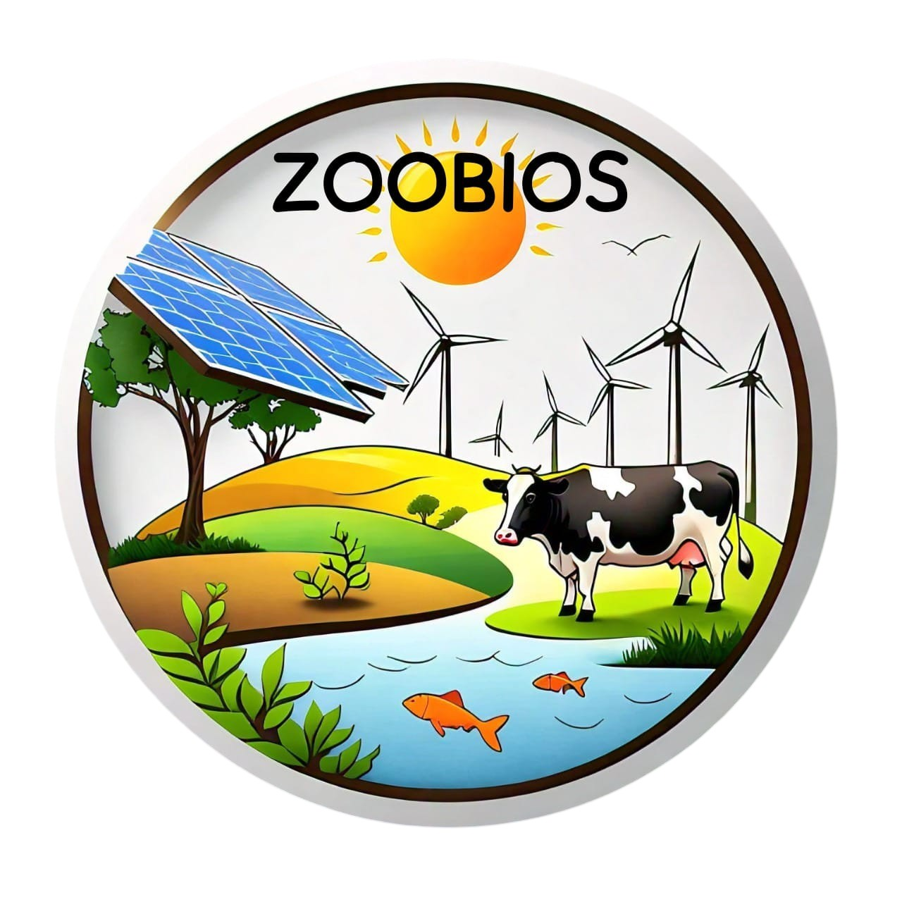

VI Foro de Investigación
“Educación Ambiental y Sostenibilidad”
Santa Marta, Colombia • Aliado estratégico: Institución Educativa Distrital Técnica Hugo J. Bermúdez
Terminos de referencia“Educación Ambiental y Sostenibilidad”
Santa Marta, Colombia • Aliado estratégico: Institución Educativa Distrital Técnica Hugo J. Bermúdez
Terminos de referenciaEl VI Foro de investigación “Educación ambiental y sostenibilidad” está dirigido a la comunidad académica interna y externa de la Universidad Nacional Abierta y a Distancia (UNAD), docentes, estudiantes, investigadores, profesionales y público en general interesado en temas ambientales e investigación.
El evento busca exponer avances y resultados de proyectos en curso o finalizados sobre educación ambiental, desarrollo sostenible y seguridad alimentaria.
En este foro pueden participar como ponentes estudiantes de primaria y secundaria, así como estudiantes y docentes de la UNAD, mediante presentaciones con diapositivas de proyectos relacionados con los temas centrales.
Promover el intercambio de conocimientos y experiencias en investigación sobre educación ambiental, desarrollo sostenible y seguridad alimentaria, mediante la participación activa de estudiantes de primaria, secundaria y estamentos de la Universidad Nacional Abierta y a Distancia (UNAD), con el fin de fomentar una cultura de sostenibilidad y responsabilidad ambiental en la ciudad de Santa Marta.
Proyectos que promuevan la conciencia, valores y competencias ambientales en todos los niveles educativos.
Investigaciones orientadas al equilibrio entre crecimiento económico, protección ambiental y equidad social.
Iniciativas relacionadas con producción sostenible de alimentos, agricultura urbana y acceso a alimentación saludable.
Haz clic para descargar la plantilla de ponencia. Los interesados en participar deben descargar la plantilla de resumen, diligenciarla y enviarla para su revisión.
Descargar plantillaUna vez haya enviado el resumen de ponencia a los correos indicados en los términos de referencia, diligencie el formulario de inscripción para completar su registro
Confirmar registroEvaluados los resúmenes recibidos, se informará a los ponentes seleccionados para que puedan preparar la presentación de su ponencia. Descargue aquí la plantilla de presentación.
Plantilla de ponencia

